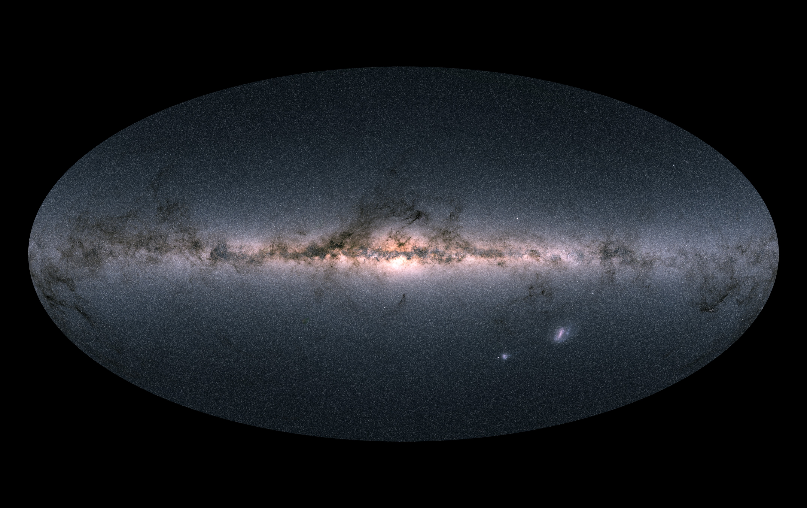

A star catalog is a systematic list of stars recording their positions on the sky, along with measured properties such as brightness, spectral type, parallax, and proper motion. Catalogs allow astronomers to identify and track individual stars consistently across different observations, instruments, and centuries.

ESA/Gaia/DPAC
The earliest known star lists date to around 1500 BCE, when Babylonian scholars recorded 36 stars on clay tablets. In 129 BCE, the Greek astronomer Hipparchus compiled roughly 850 stellar positions in the first attempt to map the whole sky, a project that also led to his discovery of the precession of the equinoxes. Claudius Ptolemy expanded this work around 140 CE in the Almagest, cataloguing 1,022 stars in 48 constellations. His catalog remained the Western standard for over 800 years.
Naming Systems
Johann Bayer introduced Greek-letter designations in 1603 (Alpha Centauri, Beta Persei), while John Flamsteed added numbered designations in 1725. Modern catalogs use prefixes tied to the catalog name: HD (Henry Draper), SAO (Smithsonian Astrophysical Observatory), HIP (Hipparcos). A single star can appear in dozens of catalogs under different names.
From Photographic Surveys to Space
Friedrich Argelander's Bonner Durchmusterung (1859–1863) catalogued 342,198 stars, setting the standard for large-scale surveys. Annie Jump Cannon and colleagues at Harvard then classified 225,300 stellar spectra for the Henry Draper Catalogue (1918–1924), establishing the spectral classification scheme (O, B, A, F, G, K, M) still used today.
Ground-based measurements of star positions are limited by atmospheric seeing. ESA's Hipparcos satellite (launched 1989) solved this by measuring parallaxes from space, producing the first high-precision all-sky astrometric catalog of 118,218 stars. Its successor, ESA's Gaia mission (launched 2013), has taken this further: Gaia Data Release 3 (2022) contains 1.812 billion sources with positions, proper motions, and parallaxes, making it by far the largest and most precise stellar census ever compiled. Gaia provided full three-dimensional positions and velocities for hundreds of millions of stars, enabling a detailed kinematic map of the Milky Way.